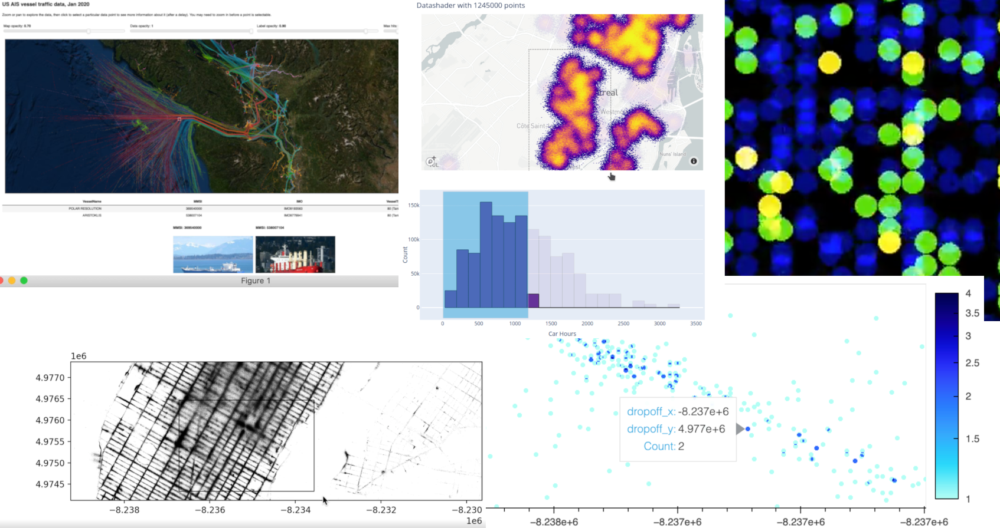
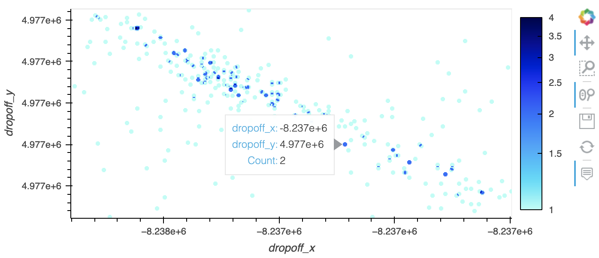
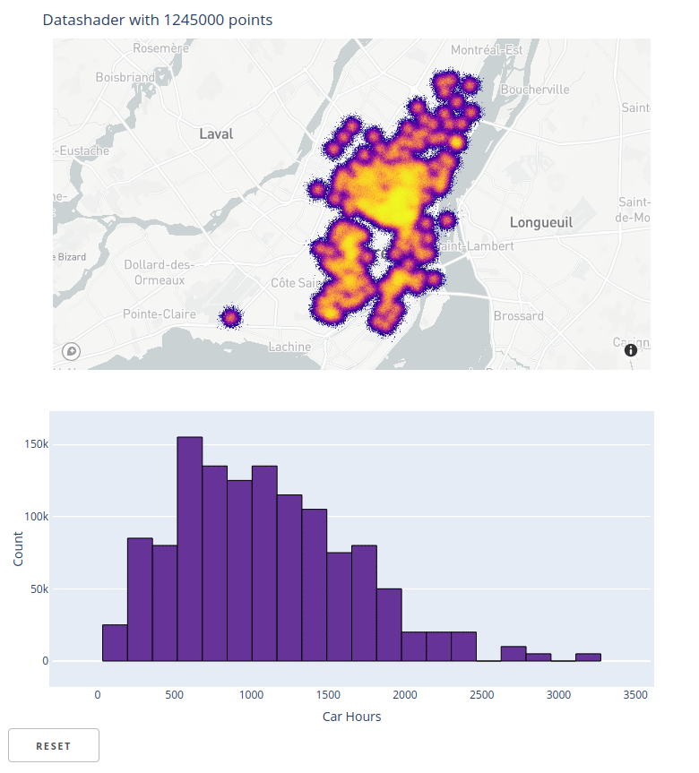
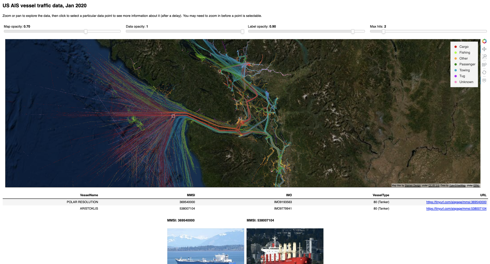

Datashader 0.13 Release

What is Datashader?
Datashader is an open-source Python library for rendering large datasets quickly and accurately. Datashader provides highly optimized, scalable support for rasterizing your data into a fixed-size array for pixel-based displays, while avoiding overplotting and other issues that make it difficult to work with large datasets. Datashader works well on its own, but it is even more powerful when embedded into an interactive plotting library like Bokeh, Plotly, or (now!) Matplotlib.
Announcing Datashader 0.13!
We are very pleased to announce the 0.12.1 and 0.13 releases of Datashader! These releases include new features from a slew of different contributors, plus maintenance and bug fixes from Jim Bednar, Philipp Rudiger, Peter Roelants, Thuy Do Thi Minh, Chris Ball, and Jean-Luc Stevens.
What’s new: - Matplotlib Artist for Datashader - Much more powerful categorical plotting - dynspread that actually works! - Aggregate spreading - Anti aliasing (experimental) - Datashader support in Dash - Inspect_points for interactive exploration in HoloViews
Matplotlib Artist for Datashader
Thanks to Nezar Abdennur (nvictus), Trevor Manz, Thomas Caswell, and Philipp Rudiger.
Datashader works best when embedded in an interactive plotting library so that data can be revealed at every spatial scale by zooming and panning. Thomas Caswell made a draft of Datashader support for Matplotlib during SciPy 2016 when Datashader was first announced, but there was still a lot of work needed to make it general. Various people made suggestions, but largely the sketch sat patiently waiting for someone to finish it. In the meantime, Thomas Robitaille made a simpler points-only renderer https://github.com/astrofrog/mpl-scatter-density, which is useful if that’s all that’s needed. During sprints at SciPy 2020, Nezar Abdennur and Trevor Manz rescuscitated Tom’s work, and it’s now been released at last! You can now use all the power of Datashader with any of Matplotlib’s many backends, e.g. here for the osx backend:
import matplotlib.pyplot as plt, dask.dataframe as dd
import datashader as ds, colorcet as cc
import datashader.transfer_functions as tf
from datashader.mpl_ext import dsshow
%matplotlib osx
df = dd.read_parquet('data/nyc_taxi_wide.parq').compute()
dsshow(df, ds.Point('dropoff_x', 'dropoff_y'), norm='eq_hist',
cmap=cc.gray[::-1], shade_hook=tf.dynspread); See getting_started/Interactivity to see how to use it.
Much more powerful categorical plotting
Thanks to Michael Ihde (@maihde), Oleg Smirnov, Philipp Rudiger, and Jim Bednar.
One of Datashader’s most powerful features is its categorical binning and categorical colormapping, which allow detailed understanding of how the distribution of data differs by some other variable, such as this plot of how population is segregated by race in New York City:

To build such a plot, Datashader calculates a stack of aggregate arrays simulaneously, one per category, instead of a single aggregate array as in the non-categorical case.
Previously, categorical binning and plotting was limited to a count() reduction, i.e., counting how many datapoints fell into each pixel, by category, implemented using a special cat_count() reduction. Categorical plotting has now been fully generalized into a new ds.by() reduction, which accepts a categorical column along with count() or any other reduction (max(), min(), mean(), sum(), etc.). Thus it’s now possible to plot the mean value of any column, per pixel, per category. See the Pipeline docs for details.
You can also now use categorical binning and plotting with numerical columns using new functions category_modulo and category_binning, which opens up entirely new applications for Datashader. category_binning effectively gives Datashader the power to do 3D aggregations of numeric axes, not just the usual 2D. For instance, by(category_binning('z', 0, 10, 16)) will bin by the floating-point column z, counting datapoints in each of 16 categories (0: 0<=z<10, 1: 10<=x<20, etc.). Combining category_binning with by, you can now do complex 3D binning like computing the maximum age in each (x, y, weight) range:
cat = ds.category_binning('weight', lower=0, higher=200, nbins=10)
agg = canvas.points(df,'x','y', agg=ds.by(cat, ds.max('age')))category_modulo is useful when working with very large numbers of unsorted integers, using a modulo operator on an integer column to reduce a large number of columns down to something more tractable for plotting.
See #875 and #927 for details on by, category_modulo, and category_binning (currently documented only at https://github.com/holoviz/datashader/pull/927#issuecomment-725991064).
dynspread that actually works!
Thanks to Jim Bednar.
Datashader’s points plotting is designed to aggregate datapoints by pixel, accurately counting how many datapoints fell into each pixel. For large datasets, such a plot will accuratelyl reveal the spatial distribution of the data over the axes plotted. However, a consequence is that an individual data point not surrounded by others will show up as a single pixel, which can be difficult to see on a high-resolution monitor, and it is almost impossible to see its color. To alleviate this issue and make it easier to go back and forth between the big picture and individual datapoints, Datashader has long offered the dynspread output-transformation function, which takes each pixel and dilates it (increases it in size) until the density of such points reaches a specified metric value. However, dynspread never worked very well in practice, always either doing no spreading or one step of spreading (a 3x3 kernel). After a fresh look at the code, it became clear that the first step of spreading was artificially increasing the amount of estimated pixel density, making it very unlikely that a second or third step would ever be done.
dynspread now spreads each pixel by an integer radius px up to the maximum radius max_px, stopping earlier if a specified fraction of data points have non-empty neighbors within the radius. This new definition provides predictable, well-behave dynspread behavior even for large values of max_px, making isolated datapoints easily visible. (#1001)
Note that this definition is only compatible with points, as they are spatially isolated; any usage of dynspread with datatypes other than points should be replaced with spread(), which will do what was probably intended by the original dynspread call anyway (i.e., to make a line or polygon edge thicker).
Aggregate spreading
Thanks to Jean-Luc Stevens.
Spreading previously worked only on RGB arrays, not numerical aggregate arrays, which meant that Datashader users had to choose between seeing isolated datapoints and having interactive features like Bokeh’s hover tool and colorbars that require access to the numerical aggregate values. spread and dynspread now work equally well with either RGB aggregates or numerical aggregates, and we now recommend that users spread at the numerical aggregate level in all supported cases. E.g. in holoviews, use spread(rasterize(obj)).opts(cnorm='eq_hist', cmap='fire') (or cnorm='log') instead of datashade(obj, cmap='fire'), and you’ll now have colorbar and hover support using Bokeh 2.3.3 or later. (#771
import dask.dataframe as dd, holoviews as hv
from holoviews.operation.datashader import rasterize, dynspread
import bokeh, datashader as ds
hv.extension("bokeh")
df = dd.read_parquet('data/nyc_taxi_wide.parq').compute()
pts = hv.Points(df, ['dropoff_x', 'dropoff_y'])
opts = hv.opts.Image(cnorm='log', colorbar=True, width=700, tools=['hover'])
dynspread(rasterize(pts)).opts(opts)
Anti-aliasing (experimental)
Thanks to Valentin Haenel.
Datashader’s line aggregations (also used in trimesh and network plotting) count how many times a line crosses a given pixel. The resulting line plots are very blocky, because of binary transitions between rows and columns depending on where the underlying line lands in the aggregate array grid. To improve appearance of such lines (at a cost of making them less easy to interpret as counts of crossings), Datashader now supports antialiased lines. This support is only partial and is still experimental; it’s enabled by adding antialias=True to the Canvas.line() method call and is currently restricted to sum and max reductions only, and to a single-pixel line width. (#916)

The remaining updates listed below are shipped in other packages, not Datashader itself, but provide additional power for Datashader users.
Datashader support in Dash
Thanks to Jon Mease.
The Dash package for deploying data-science dashboards now supports Datashader using the high-level HoloViews Plotly backend. HoloViews Plotly, Matplotlib, and Bokeh plots can now be deployed using either a Bokeh-based server, which supports user-specific state that makes programmimg simpler, or a Dash-based server, which has a stateless model that can support larger numbers of concurrent users on a given set of server hardware.

inspect function for interactive exploration in HoloViews
Thanks to Jean-Luc Stevens and Philipp Rudiger.
HoloViews has always been an easy way to work with interactive Datashader plots by handling user events, requesting an updated Datashader plot, and rendering the results. However, the resulting plots always showed only an aggregated view of the data, no matter how much the user zoomed in. HoloViews 1.14.4 now ships with inspect_points() and inspect_polygons wrapped in a general inspect function that uses Datashader’s aggregate to determine if there is data in a local region, then queries the original dataset to return those specific points and all their metadata. The result is that you can now view all of your data using Datashader, while still being able to see individual data points using hover or selection.
See the new ship_traffic example for how to use inspect_points and the NYC Buildings example for how to use inspect_polygons. Also see HoloViews linked brushing for related functionality that supports linked selections on Datashader and other plots.

Help us!
Datashader is an open-source project and we are always looking for new contributors. Join us the discussion on the Discourse and we would be very excited to get you started contributing! Also please get in touch with us if you work at an organization that would like to support future Datashader development, fund new Datashader features, or set up a support contract.